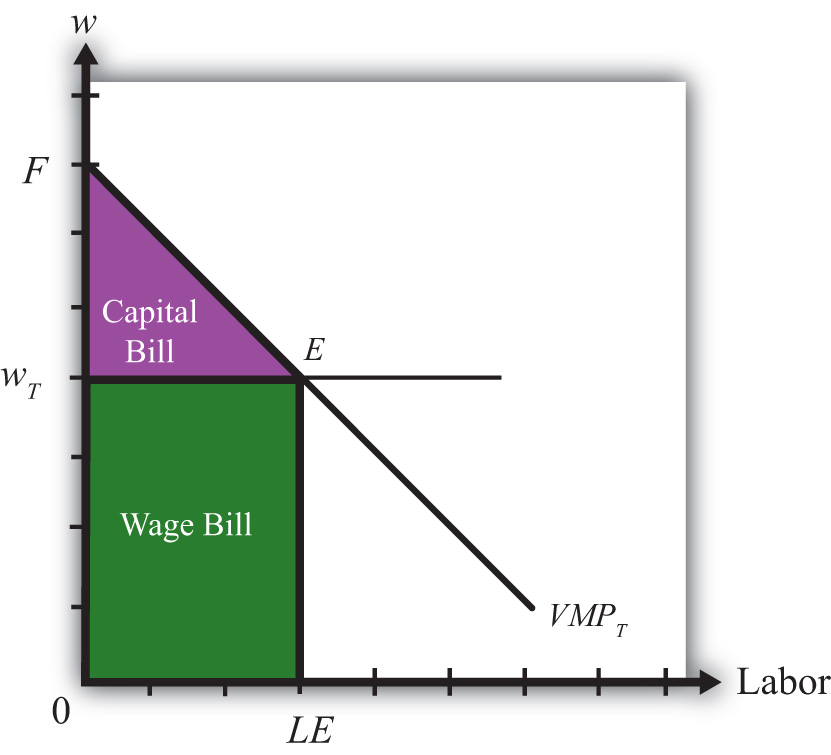
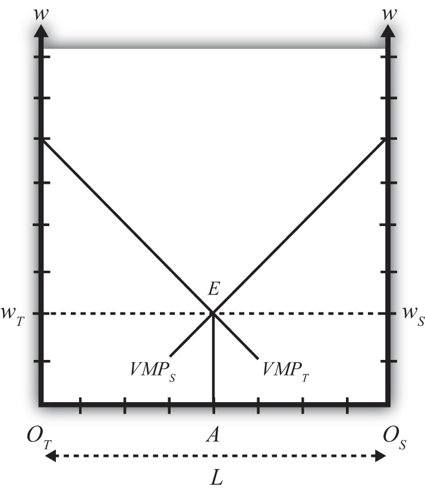
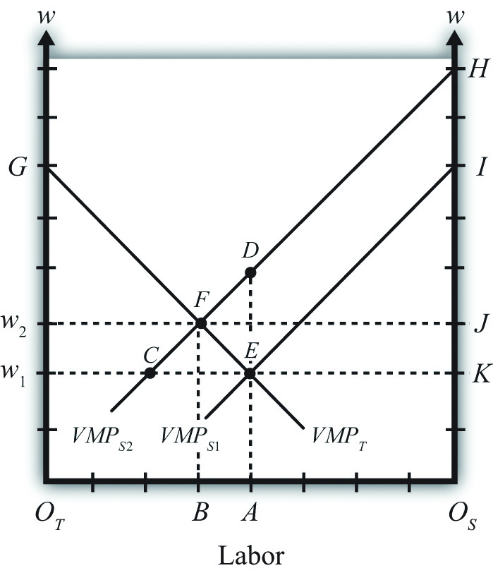

Consider an economy with two perfectly competitive industries, textiles and steel. Suppose the output of both products requires labor and capital as factor inputs. However, we’ll imagine the capital used in textile production consists of equipment such as looms, while the capital used in steel production requires equipment such as blast furnaces. Since each type of capital is designed for use in a specific production process, we call it “specific capital.” We can imagine that if the capital from one industry were shifted to another, its productivity in the new industry would be zero. Simply imagine the usefulness of a blast furnace in textile production and you should see the point! Thus for capital to remain fully employed, it must remain in the same industry—it is immobile, or stuck in its respective industry.
We assume labor, on the other hand, is homogenous and perfectly freely mobile between the two industries. This will imply that a firm’s choice problem is reduced to the decision of how much labor to hire and how much to produce to maximize its profits, given that it has a fixed amount of capital available to use. We’ll assume for simplicity that the capital stock in each industry is exogenously fixed and there is no investment in new capital.
In this context, a firm will maximize it profits when it produces a level of output such that the wage it must pay to workers is equal to the value of the marginal product at the chosen level of output. This is written in equation form for a textile firm as follows:
w = PT MPT.The left-hand side of the equation represents the hourly wage the firm pays its workers. The right-hand side is the value of the marginal product, which consists of the product of the market price of output (PT) and the marginal product of production (MPT). The marginal product, in turn, represents the additional output that can be obtained by increasing the labor input by one unit. For example, if MPT = 10, this means that by adding one more hour of labor, ten additional meters of cloth could be produced. The units of the expression MPT are meters of cloth per hour of labor (m/hr.). When multiplied by the price, measured as dollars per meter, the product, PT MPT, yields the number of dollars that could be earned per hour of additional labor applied in production. This then is the definition of the value of the marginal product in this context. It is measured in dollars per hour, the same as the wage is measured—a good thing since they must be equal to each other!
To see why this condition will hold when the firm maximizes profit, we will graph these expressions in Figure 5.12 "Specific Factor Model—Single-Firm Equilibrium", which depicts the value of a marginal product line for a representative textile firm, VMPT = PT MPT, and the market wage rate, wT, with respect to the labor supply.
The wage is assumed to be exogenous to each firm and is independent of the labor supply. Hence it is drawn as a horizontal line at the level of the wage, wT.Later the wage will be determined endogenously through the interaction of the two industries. Nevertheless, firms in both industries recognize they are too small to influence the market wage and make decisions based on an exogenously given wage.
Figure 5.12 Specific Factor Model—Single-Firm Equilibrium

The value of the marginal product is a decreasing function of labor. This means that at higher levels of labor usage, each additional unit of labor applied to production adds fewer units of output. The intuition for this is straightforward. Imagine more and more workers being assigned to use the same machine in a production process. Each additional worker may help in the production process and add output (thus MP > 0), but as more and more are added, overcrowding will set in and each person will find less and less to do that is helpful. Thus the marginal product will fall. Since we draw the value of the marginal product line under the assumption that there is a fixed amount of specific capital in the industry, the same overcrowding argument applies at the larger industry scale.
The position of the VMP line is dependent on the market price and the amount of specific capital, both assumed to be exogenous. If the price of the product rises (falls), the VMP line shifts upward (downward). The same applies for changes in the amount of specific capital. If the amount of specific capital in the industry were to rise (fall), the VMP line would shift upward (downward).
The profit-maximizing choice of labor input by the industry is determined at level LE on the horizontal axis, where the wage wT is equal to the value of the marginal product VMPT at point E. To see why, consider what it would mean if the industry chose a different labor input, say L1. At L1, VMPL1 > wT. This says that the additional revenue earned by expanding labor input by one unit exceeds the additional cost of adding one more unit of labor. Thus adding one more unit of labor must raise profit, which means that L1 cannot be the profit-maximizing choice—it must lie to the right of L1. Next consider labor input L2. At L2, VMPL2 < wT. This says that the additional revenue earned by expanding labor input by one unit is less than the cost of adding one more unit of labor. Thus adding one more unit of labor must lower profit, which means that L2 cannot be the profit-maximizing choice—it must lie to the left of L2. Finally, consider labor input LE. At LE, VMPLE = wT. This says that the additional revenue earned by expanding labor input by one unit equals the additional cost of adding one more unit of labor. Thus adding one more unit of labor has no effect on profit, which means that LE must be the profit-maximizing choice.
In Figure 5.13 "Specific Factor Model—Factor Payments", we consider ways to represent the factor payments made in an equilibrium. Consider a wage rate wT and an equilibrium labor input given by LE. The product of these two, wTLE, represents the total amount of money that must be paid to workers in the industry and is referred to as the wage bill. It is the charges incurred by the owners (i.e., the bill that must be paid) to hire the workers. It is represented by the green shaded area.
Figure 5.13 Specific Factor Model—Factor Payments
The total amount of revenue earned by the firm on the market is given by the total shaded area (green + purple). This corresponds to the area under the VMPT line between 0 and LE units of labor. Without the use of calculus, it is difficult to describe why this is so. Nonetheless, since the VMP gives the additional revenue earned for each additional unit of labor, one can imagine beginning back at L = 0 and increasing labor in small increments. The vertical distance to the VMP line would be added to the total revenue for every increment in labor. Adding each of these vertical lines together between L= 0 and L = LE yields total revenue earned by the firm and is given by the total shaded area.
Finally, since there are only two factors of production—labor and specific capital—it must follow that the total revenue equals the sum of the wage bill and the capital bill, where the capital bill represents the total amount of money paid to the capital owners. In equation form we could write
total revenue = wage bill + capital bill.Since the total revenue is given by the total shaded area and the wage bill is given by the lower shaded area, the capital bill must be given by the upper purple shaded area. Again, this area represents the total amount of money the firm must pay to the owners of capital used in production. It is not the rental rate, however. The rental rate is given by the rental bill divided by the total quantity of capital units used in production. In other words, the rental rate in textiles, rT, is given by
rT = rental bill/KT,where KT is the fixed amount of specific capital available for use in the industry.
Similarly, the wage rate in textiles, wT, is given by
wT = wage bill/LE.The economy consists of two industries, textiles and steel, each of which is choosing labor input so as to maximize profit. Thus when both industries operate and both maximize profit,
wT = VMPTfor textiles and
wS = VMPSfor steel, where wT and wS are the wage rates paid to workers in textiles and steel, respectively. With homogeneous and perfectly mobile labor, another condition must also hold, namely, the labor constraint:
LT + LS = L.In other words, the labor used in textile production (LT) plus the labor used in steel production (LS) must equal the total labor endowment available in the economy (L). Finally, because labor is homogeneous and perfectly mobile between industries, wages must be equalized in equilibrium between the two industries. Thus
wT = wS.All four conditions must be satisfied simultaneously in an equilibrium in this model. To represent this equilibrium and to provide a medium to analyze potential changes, we present a diagram developed by Mussa (1974). The diagram (shown in Figure 5.14 "Specific Factor Model—Mussa Diagram") is unique in that it presents all four conditions together on the same graph. The horizontal axis of the diagram plots the labor supply. The vertical axis plots the wage and the value of the marginal products.
Figure 5.14 Specific Factor Model—Mussa Diagram
The horizontal length of Figure 5.14 "Specific Factor Model—Mussa Diagram", OTOS, represents the labor endowment (L), the total amount of labor available for use in the economy. The VMPT line slopes down from the left as presented before. However, the VMPS line slopes down from the right. This is because the point OS corresponds to zero units of labor used in steel production and OTOS units of labor used in textiles. As we move to the left from OS, labor used in steel increases, while labor used in textiles decreases. Thus the VMPS line is flipped and drawn with respect to its origin at OS. Every point along the horizontal axis corresponds to an allocation of labor between the two industries satisfying the labor constraint condition. Thus at a point like A, OTA units of labor are used in textile production (LT) and OSA units of labor are used in steel production (LS). The sum of the two equals OTOS, which is the total labor endowment (L).
At point E in Figure 5.14 "Specific Factor Model—Mussa Diagram", the two VMP lines intersect so that VMPT = VMPS, determining the unique wage rate w = wT = wS using all the available labor, OTOS. Thus at point E all four equilibrium conditions listed are satisfied.
Prices will change whenever a country moves from autarky to free trade or when a country imposes a trade or domestic policy. At this stage, we will simply consider the effects of a price change within the context of the model without specifying why the change occurred. (In more technical terms, we say the price change is exogenous.) Later, we’ll introduce several situations to see how trade or trade policies will affect outcomes in the specific factor (SF) model.
Suppose we begin with a country producing textiles and steel in an initial equilibrium given by point E in Figure 5.15 "Effects of a Price Increase". The original value of the marginal product lines is given by VMPT1 and VMPS1, respectively. The initial labor allocation is OTA units to textiles and OSA units to steel. The initial wage rate in both industries is w1.
Figure 5.15 Effects of a Price Increase
Now suppose the price of steel increases exogenously. The immediate effect will be to raise the value of the marginal product of steel, shifting up VMPS1 to VMPS2. The new equilibrium is given at point F. At F, labor allocated to steel production will have risen to OSB, while labor used in textiles will have fallen to OTB. The equilibrium wage increases to w2.
The intuition for these changes follows from the underlying dynamic effects. At first, when the price of steel rises, the wage and rental rates remain fixed. This means steel revenue rises while costs remain the same, stimulating an increase in steel profits. Positive profit, in a perfectly competitive market, induces new entry of firms into steel production, expansion of current firms in the industry, or both. To expand, steel must induce workers to move over from textile production. This requires an increase in the wage since labor demand temporarily exceeds labor supply. To prevent all the labor from shifting to steel, the textile industry must raise the wage to its workers as well. As labor shifts from textiles to steel and as the wage rises, the costs of production in steel and textiles rise. In steel, this erodes the temporary profits it was making. Textiles respond to the higher costs by cutting production and releasing workers. Remember, there is no ability to expand capital inputs in steel since we assume steel’s capital stock is fixed exogenously in size, and due to specificity, capital cannot be moved in from the textile industry. In the end, industry profits are driven to zero in both industries once the wage rises sufficiently.
Our prime concern, however, is the effect of the price increase on the factor payments or returns. In other words, how are wages and rental rates on capital affected by the steel price increase? The answer for wages is already shown. We can see that wages rise for workers in both industries. However, we care about not just how the nominal (money) wage changes but, more importantly, how the real wage changes. In other words, we need to identify how the purchasing power of wages changes when the price of steel increases. We also want to know how the real rental rates change.
When the price of steel rises from PS1 to PS2, the value of the marginal product line shifts up proportionally to the increase in the price. This is because the price of steel enters the value of the marginal product formula multiplicatively—that is, VMPS = PSMPS. The percentage change in the steel price is derived in Figure 5.15 "Effects of a Price Increase" as
Here’s why. First, the distance DA is the value of the marginal product for labor usage OSA when the price of steel is PS2. The distance EA is the value of the marginal product for labor usage OSA when the price of steel is PS1. Thus
Note that MPS cancels out because it is evaluated at the same labor input given by point A.
Similarly, since FB is the equilibrium wage at steel price PS2 and CB is the wage at steel price PS1, the percentage change in the equilibrium wage is given by
From Figure 5.15 "Effects of a Price Increase", it is obvious that , which means that the percentage change in the price of steel exceeds the percentage change in the wage rate.
Since in the exercise the price of textiles remains constant, , we can expand the inequality to
Since , this implies that w/PS, the real wage in terms of steel purchases, decreases. In other words, workers in both industries will be able to buy less steel after the steel price increase than before. However, , which implies that w/PT, the real wage in terms of textile purchases, increases. This means all workers will be able to buy more textiles after the steel price increase than before. In terms of overall well-being, workers will lose in total if they tend to purchase more steel products and fewer textile products. However, if a person’s preferences are tilted toward more textiles than steel, then the person may be better off.
When the price of steel rises from PS1 to PS2, the rental bill in the steel industry rises from area KEI to area JFH in Figure 5.15 "Effects of a Price Increase". Since the amount of capital in steel remains fixed, this must mean that the rental rate on steel capital increases. However, simply by looking at the diagram, it is impossible to tell if that increase exceeds or falls short of the percentage change in the price of steel. We’ll discuss this issue further.
The rental bill in the textile industry falls from area w1EG to area w2FG in Figure 5.15 "Effects of a Price Increase". Since the amount of capital in steel remains fixed, this must mean that the rental rate on textile capital decreases. Furthermore, since the price of steel increases and the price of textiles stays the same, it must follow that rT/PS and rT/PT decrease. Therefore, the real rental rate on textile capital must fall with respect to purchases of both goods when the price of steel increases.
A definitive ordering of the percentage changes in all goods and factor prices in a two-good SF model was derived mathematically by Jones (1971).See R. W. Jones, “A Three-Factor Model in Theory, Trade and History,” in Trade, Balance of Payments and Growth, ed. J. N. Bhagwati, R. W. Jones, R. A. Mundell, and J. Vanek (Amsterdam: North-Holland Publishing Co., 1971). The magnification effect for the SF model is analogous to the magnification effect for prices demonstrated in the Heckscher-Ohlin (H-O) model. It defines an ordering of percentage changes in factor prices induced by changes in the goods’ prices. Thus suppose the price of steel rises by a greater percentage than the price of textiles such that . This may occur if two countries move together in trade or if a trade or domestic policy is changed. Jones showed that the magnification effect in this case would be
Since and , this implies rS/PS and rS/PT both increase. Thus the real returns to steel capital increase with respect to both goods.
Since and , rT/PS and rT/PT both decrease. Thus the real returns to textile capital decrease with respect to both goods. Finally, since , w/PS, the real wage in terms of steel purchases, decreases. Thus workers will be able to buy less steel than before. However, , which implies that w/PT, the real wage in terms of textile purchases, increases. This means all workers will be able to buy more textiles than before.
An alternative version of the magnification effect in this model can be written for the case when the price of textiles rises by a greater percentage than the price of steel such that . The magnification effect in this case becomes
This implies that the real returns to capital in the textile industry increase, and the real returns to capital in the steel industry decrease with respect to purchases of both goods. As before, though, the effect on wages is mixed. Real wages with respect to steel purchases increase, while real wages with respect to textile purchases fall.
Since this model is a variation of the H-O model, production technologies are assumed to be identical between countries and trade occurs due to differences in factor proportions. Since there are ostensibly three factors—labor, textile capital, and steel capital—a country will export those goods that use its relatively abundant factor most intensively. Generally, this model is analyzed by assuming a country conforms to the trade pattern described by the H-O model.
Thus if steel production is capital intensive and the country is capital abundant, then in autarky the price of steel will be relatively lower domestically than abroad, while the price of textiles will be relatively higher. Upon opening trade, the price of steel will begin to rise as steel is exported and the price of textiles will fall as textiles are imported. These price changes are all one needs to apply the magnification effect.
If we assume trade leads to , then . This implies that the return to capital in the export industry (steel) rises, while the return to capital in the import-competing industry (textiles) falls. The return to mobile labor rises with respect to imported goods but falls with respect to export goods.
In contrast, if a country experiences the opposite price change such that , then the country must be exporting textiles and importing steel. This implies . Thus the return to capital in the export industry (textiles) rises, while the return to capital in the import-competing industry (steel) falls. The return to mobile labor rises with respect to imported goods but falls with respect to export goods.
Now we can state more formally and generally that if capital is immobile between industries (or specific to an industry) and if labor is homogeneous and freely mobile between industries, then free trade will cause an increase in the real rents earned by capital in the export industry, a decrease in real rents earned by capital in the import-competing industry, an increase in real wages with respect to purchases of the import goods, and a decrease in real wages with respect to purchases of the export goods.
Jeopardy Questions. As in the popular television game show, you are given an answer to a question and you must respond with the question. For example, if the answer is “a tax on imports,” then the correct question is “What is a tariff?”